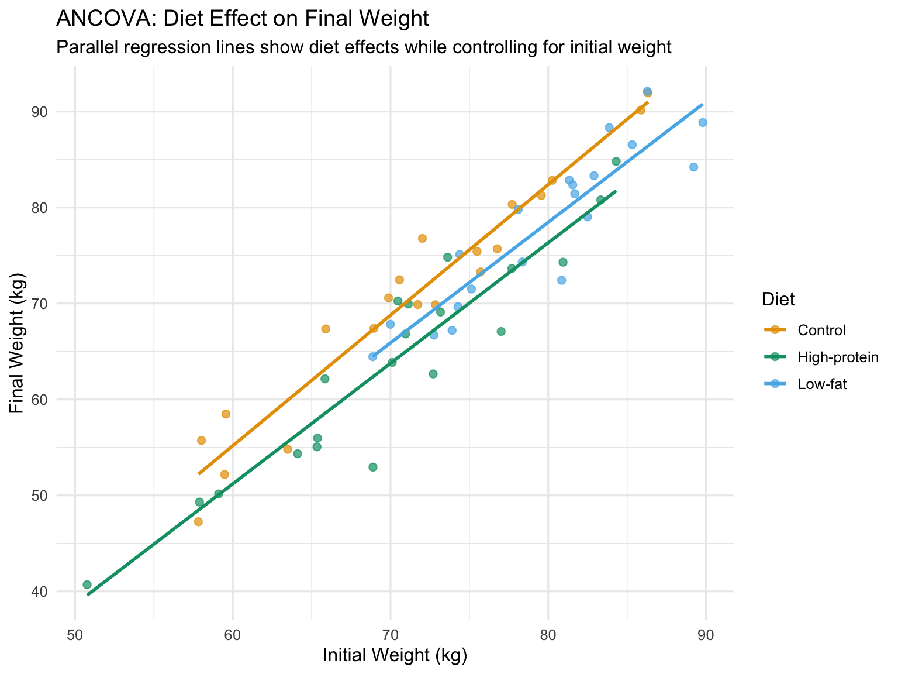
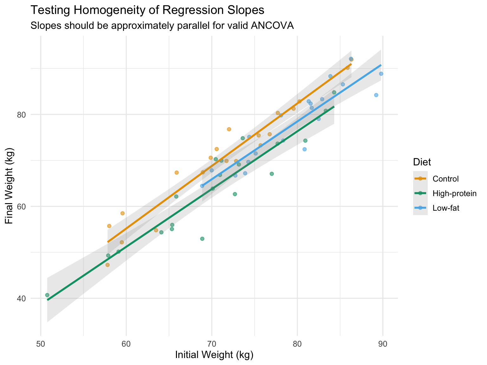
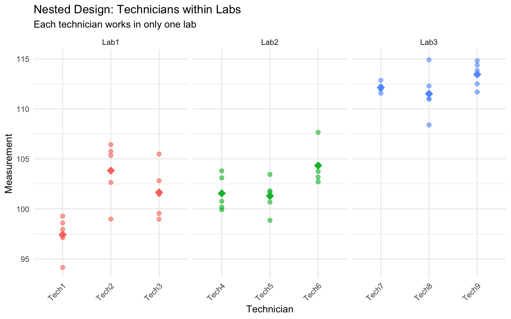
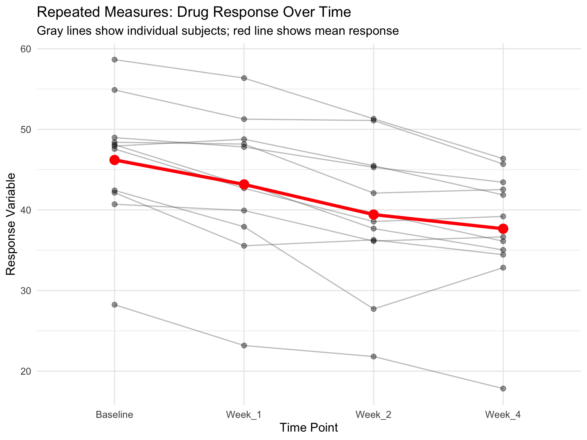
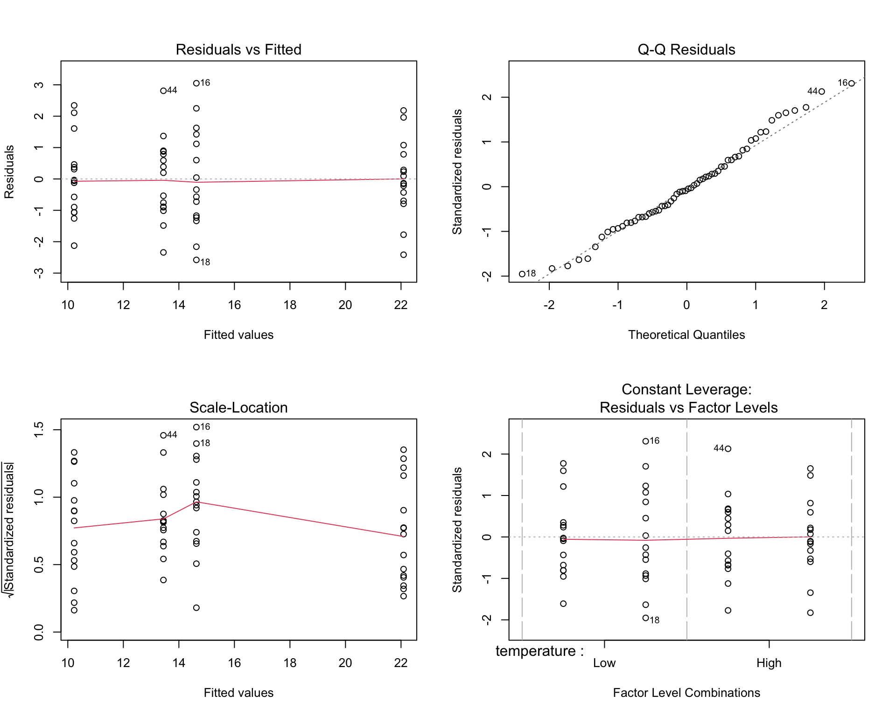

While one-way ANOVA compares groups defined by a single factor, many biological experiments manipulate multiple factors simultaneously. A factorial design examines all combinations of factor levels, allowing us to study not only the independent effect of each factor but also how factors interact with each other.
Consider an experiment testing the effects of both temperature and nutrient concentration on algal growth. A factorial design would include all combinations: high temperature with high nutrients, high temperature with low nutrients, low temperature with high nutrients, and low temperature with low nutrients. This approach is more efficient than conducting separate experiments for each factor, and it reveals interactions that single-factor designs would miss.
Factorial designs are characterized by: - Multiple factors (independent variables) - All combinations of factor levels are tested - Ability to test for interactions between factors - Greater efficiency than separate one-factor experiments
The notation \(a \times b\) factorial design means factor A has \(a\) levels and factor B has \(b\) levels, producing \(a \times b\) treatment combinations. A \(2 \times 3\) design has 6 treatment groups; a \(2 \times 2 \times 2\) design has 8 treatment groups.
27.2 Two-Way ANOVA
Two-way ANOVA analyzes data from a two-factor experimental design. The model partitions variance into:
Main effect of Factor A: The average effect of Factor A across all levels of Factor B
Main effect of Factor B: The average effect of Factor B across all levels of Factor A
Interaction effect (A × B): The extent to which the effect of one factor depends on the level of the other factor
Residual (error): Unexplained variation within treatment groups
where: - \(\mu\) is the grand mean - \(\alpha_i\) is the effect of level \(i\) of Factor A - \(\beta_j\) is the effect of level \(j\) of Factor B - \((\alpha\beta)_{ij}\) is the interaction effect - \(\epsilon_{ijk}\) is the random error for observation \(k\) in treatment combination \(ij\)
Code
# Simulated factorial experiment: Temperature × Nutrient effects on growthset.seed(123)n <-15# replicates per treatment# Create factorial design datatemperature <-rep(c("Low", "High"), each =2*n)nutrient <-rep(rep(c("Low", "High"), each = n), 2)# Simulate growth with main effects AND interaction# Low temp & low nutrient: baseline 10# High nutrient adds 5# High temp adds 3# BUT interaction: high temp × high nutrient gives extra boost of 4growth <-numeric(4*n)growth[temperature =="Low"& nutrient =="Low"] <-rnorm(n, 10, 1.5)growth[temperature =="Low"& nutrient =="High"] <-rnorm(n, 15, 1.5)growth[temperature =="High"& nutrient =="Low"] <-rnorm(n, 13, 1.5)growth[temperature =="High"& nutrient =="High"] <-rnorm(n, 22, 1.5) # Synergistic effectfactorial_data <-data.frame(temperature =factor(temperature, levels =c("Low", "High")),nutrient =factor(nutrient, levels =c("Low", "High")),growth = growth)# Visualize the designggplot(factorial_data, aes(x = temperature, y = growth, fill = nutrient)) +geom_boxplot(alpha =0.7) +geom_jitter(width =0.1, alpha =0.3, size =1) +labs(title ="Factorial Design: Temperature × Nutrient",subtitle ="Each combination of factor levels is tested",x ="Temperature",y ="Growth Rate",fill ="Nutrient\nLevel") +scale_fill_manual(values =c("Low"="#E69F00", "High"="#56B4E9")) +theme_minimal(base_size =12)
Figure 27.1: Two-way ANOVA factorial design showing main effects and interaction
Code
# Fit the two-way ANOVA modelfactorial_aov <-aov(growth ~ temperature * nutrient, data = factorial_data)summary(factorial_aov)
Df Sum Sq Mean Sq F value Pr(>F)
temperature 1 427.4 427.4 228.63 < 2e-16 ***
nutrient 1 638.7 638.7 341.63 < 2e-16 ***
temperature:nutrient 1 67.7 67.7 36.19 1.43e-07 ***
Residuals 56 104.7 1.9
---
Signif. codes: 0 '***' 0.001 '**' 0.01 '*' 0.05 '.' 0.1 ' ' 1
The ANOVA table shows three F-tests: - temperature: Tests whether the main effect of temperature is significant - nutrient: Tests whether the main effect of nutrient is significant - temperature:nutrient: Tests whether the interaction is significant
27.3 Understanding Interactions
An interaction occurs when the effect of one factor depends on the level of another factor. Interactions are one of the most important features of factorial designs—they reveal that factors do not operate independently.
Types of effects:
Additive effects (no interaction): The effect of Factor A is the same regardless of Factor B’s level. Effects simply add together.
Synergistic interaction: The combined effect is greater than the sum of individual effects. For example, two drugs together might be more effective than expected from their individual effects.
Antagonistic interaction: The combined effect is less than expected. One factor might diminish or reverse the effect of another.
Interaction Plots
The clearest way to understand interactions is through interaction plots, which show the mean response at each factor combination.
Code
# Calculate means for each combinationmeans_data <- factorial_data %>%group_by(temperature, nutrient) %>%summarize(mean_growth =mean(growth),se =sd(growth) /sqrt(n()),.groups ="drop")# Create interaction plotggplot(means_data, aes(x = temperature, y = mean_growth,color = nutrient, group = nutrient)) +geom_line(linewidth =1.2) +geom_point(size =4) +geom_errorbar(aes(ymin = mean_growth - se, ymax = mean_growth + se),width =0.1, linewidth =1) +labs(title ="Interaction Plot: Temperature × Nutrient",subtitle ="Non-parallel lines indicate an interaction effect",x ="Temperature",y ="Mean Growth Rate",color ="Nutrient\nLevel") +scale_color_manual(values =c("Low"="#E69F00", "High"="#56B4E9")) +theme_minimal(base_size =12) +theme(legend.position ="right")# Alternative: base R interaction.plotinteraction.plot(x.factor = factorial_data$temperature,trace.factor = factorial_data$nutrient,response = factorial_data$growth,col =c("#E69F00", "#56B4E9"),lwd =2,xlab ="Temperature",ylab ="Mean Growth Rate",trace.label ="Nutrient")
Parallel lines suggest no interaction—the effect of one factor is constant across levels of the other
Non-parallel lines suggest an interaction—the effect of one factor changes depending on the other factor
Crossing lines indicate a strong interaction, potentially with a reversal of effects
Figure 27.4: Illustration of interaction patterns showing parallel versus non-parallel lines
The figure above illustrates common interaction patterns. In panel (a), parallel lines indicate no interaction—the effect of Factor A is the same at both levels of Factor B. In panel (b), non-parallel lines reveal an interaction—the effect of Factor A differs depending on Factor B’s level.
27.4 Interpreting Main Effects vs Interactions
When a significant interaction exists, interpreting main effects requires caution. The main effect represents an average across levels of the other factor, but if there’s an interaction, this average may not meaningfully represent what happens at any particular level.
When Interactions are Present
If the interaction is significant, focus on simple effects—the effect of one factor at each level of the other factor—rather than main effects. The main effect is an average that may obscure important differences.
Simple effects analysis examines the effect of one factor separately at each level of the other factor:
Code
# Simple effects: effect of nutrient at each temperature level# Low temperaturelow_temp_data <- factorial_data %>%filter(temperature =="Low")t.test(growth ~ nutrient, data = low_temp_data)
Welch Two Sample t-test
data: growth by nutrient
t = -8.2269, df = 26.34, p-value = 9.446e-09
alternative hypothesis: true difference in means between group Low and group High is not equal to 0
95 percent confidence interval:
-5.500596 -3.302476
sample estimates:
mean in group Low mean in group High
10.22858 14.63011
Code
# High temperaturehigh_temp_data <- factorial_data %>%filter(temperature =="High")t.test(growth ~ nutrient, data = high_temp_data)
Welch Two Sample t-test
data: growth by nutrient
t = -18.771, df = 27.893, p-value < 2.2e-16
alternative hypothesis: true difference in means between group Low and group High is not equal to 0
95 percent confidence interval:
-9.593152 -7.705141
sample estimates:
mean in group Low mean in group High
13.44293 22.09208
In our example, the nutrient effect is significant at both temperatures, but the magnitude differs—the interaction shows that the nutrient boost is stronger at high temperature.
27.5 ANCOVA: Analysis of Covariance
Analysis of Covariance (ANCOVA) combines ANOVA with regression by including both categorical factors and continuous covariates. The covariate is a continuous variable that you want to control for—it’s not a treatment you manipulate, but a source of variation you want to account for.
Common uses of ANCOVA: - Controlling for pre-existing differences (baseline measurements) - Increasing precision by removing variance explained by the covariate - Adjusting for confounding variables - Testing whether regression slopes differ across groups
The ANCOVA Model
The ANCOVA model for one factor and one covariate is:
where: - \(\mu\) is the overall mean - \(\alpha_i\) is the effect of group \(i\) - \(\beta\) is the regression slope (common to all groups) - \(x_{ij}\) is the covariate value - \(\bar{x}\) is the mean of the covariate - \(\epsilon_{ij}\) is the random error
The key assumption is that the relationship between the covariate and response has the same slope in all groups (homogeneity of regression slopes).
Code
# Simulated ANCOVA example: Effect of diet on final weight, controlling for initial weightset.seed(567)n_per_group <-20# Three diet treatmentsdiet_data <-data.frame(diet =factor(rep(c("Control", "Low-fat", "High-protein"), each = n_per_group)),initial_weight =c(rnorm(n_per_group, 75, 8), # Control grouprnorm(n_per_group, 78, 8), # Low-fat (slightly heavier initially)rnorm(n_per_group, 73, 8) # High-protein (slightly lighter initially) )) %>%mutate(# Final weight depends on diet AND initial weight# Diet effects: Control = 0, Low-fat = -3, High-protein = -5diet_effect =case_when( diet =="Control"~0, diet =="Low-fat"~-3, diet =="High-protein"~-5 ),# Final weight = initial + diet effect + some regression to mean + noisefinal_weight = initial_weight + diet_effect +0.3* (initial_weight -75) +rnorm(n(), 0, 3) )# Visualize the ANCOVA setupggplot(diet_data, aes(x = initial_weight, y = final_weight, color = diet)) +geom_point(alpha =0.7, size =2) +geom_smooth(method ="lm", se =FALSE, linewidth =1) +labs(title ="ANCOVA: Diet Effect on Final Weight",subtitle ="Parallel regression lines show diet effects while controlling for initial weight",x ="Initial Weight (kg)",y ="Final Weight (kg)",color ="Diet") +scale_color_manual(values =c("Control"="#E69F00", "Low-fat"="#56B4E9", "High-protein"="#009E73")) +theme_minimal(base_size =12)

Figure 27.5: ANCOVA example showing treatment effects on final weight while controlling for initial weight
Fitting ANCOVA in R
Code
# Fit ANCOVA modelancova_model <-aov(final_weight ~ initial_weight + diet, data = diet_data)summary(ancova_model)
Note the order of terms: the covariate (initial_weight) is entered first to remove its effect before testing the factor (diet).
Code
# Compare to ANOVA without covariateanova_only <-aov(final_weight ~ diet, data = diet_data)summary(anova_only)
Df Sum Sq Mean Sq F value Pr(>F)
diet 2 1951 975.5 8.426 0.000623 ***
Residuals 57 6600 115.8
---
Signif. codes: 0 '***' 0.001 '**' 0.01 '*' 0.05 '.' 0.1 ' ' 1
Code
# The ANCOVA has smaller residual SS and more powercat("\nResidual SS (ANOVA):", round(sum(residuals(anova_only)^2), 1), "\n")
Residual SS (ANOVA): 6599.6
Code
cat("Residual SS (ANCOVA):", round(sum(residuals(ancova_model)^2), 1), "\n")
Residual SS (ANCOVA): 698.5
Adjusted Means
ANCOVA produces adjusted means—the group means estimated at the overall mean of the covariate. These are the means we would expect if all groups had started with the same covariate value.
Code
# Get adjusted meanslibrary(emmeans)ancova_emm <-emmeans(ancova_model, "diet")ancova_emm
# Pairwise comparisons of adjusted meanspairs(ancova_emm, adjust ="tukey")
contrast estimate SE df t.ratio p.value
Control - (High-protein) 5.11 1.12 56 4.567 <0.0001
Control - (Low-fat) 3.38 1.22 56 2.774 0.0202
(High-protein) - (Low-fat) -1.73 1.25 56 -1.385 0.3554
P value adjustment: tukey method for comparing a family of 3 estimates
Testing Homogeneity of Slopes
A critical assumption is that regression slopes are equal across groups. Test this by including the interaction term:
Code
# Test for unequal slopes (interaction between covariate and factor)slope_test <-aov(final_weight ~ initial_weight * diet, data = diet_data)summary(slope_test)
A significant interaction indicates slopes differ across groups, violating the ANCOVA assumption. In that case, you should: 1. Report separate regressions for each group 2. Use a more complex model (separate slopes ANCOVA) 3. Consider whether the interaction itself is scientifically meaningful
Code
# Visualize slopes by groupggplot(diet_data, aes(x = initial_weight, y = final_weight, color = diet)) +geom_point(alpha =0.6) +geom_smooth(method ="lm", se =TRUE, alpha =0.2) +labs(title ="Testing Homogeneity of Regression Slopes",subtitle ="Slopes should be approximately parallel for valid ANCOVA",x ="Initial Weight (kg)",y ="Final Weight (kg)",color ="Diet") +scale_color_manual(values =c("Control"="#E69F00", "Low-fat"="#56B4E9", "High-protein"="#009E73")) +theme_minimal(base_size =12)

Figure 27.6: Testing homogeneity of slopes: parallel lines indicate the assumption is met
ANCOVA Assumptions
Independence of observations
Normality of residuals
Homogeneity of variance across groups
Linear relationship between covariate and response
Homogeneity of regression slopes (equal slopes across groups)
Covariate measured without error (or with negligible error)
Covariate independent of treatment (especially important in observational studies)
The last assumption is critical: if the treatment affects the covariate, ANCOVA can remove real treatment effects. The covariate should ideally be measured before treatment is applied.
When to Use ANCOVA
Use ANCOVA when: - You have a continuous covariate measured before treatment - You want to increase precision by accounting for baseline variation - Groups differ on the covariate (but not due to treatment) - The covariate-response relationship is linear with equal slopes
Avoid ANCOVA when: - The covariate is affected by treatment - Slopes clearly differ across groups - The covariate is categorical (use factorial ANOVA instead) - Sample sizes are very small
27.6 Nested Designs
In nested designs, levels of one factor exist only within levels of another factor. This differs from a factorial design where all combinations of factors are crossed.
Common examples in biology: - Students nested within classrooms (each student is in only one classroom) - Samples nested within sites (each sample comes from one site) - Technicians nested within labs (each technician works in one lab) - Subsamples nested within experimental units
In a nested design, we cannot estimate an interaction because not all factor combinations exist. The nested factor is typically a random effect representing sampling variability.
Notation: Factor B is nested within Factor A, written as B(A) or B/A.
Code
# Simulated nested design: Technicians (nested within Labs)set.seed(456)n_labs <-3n_techs_per_lab <-3n_measurements <-5lab <-rep(paste0("Lab", 1:n_labs), each = n_techs_per_lab * n_measurements)tech <-rep(paste0("Tech", 1:(n_labs * n_techs_per_lab)), each = n_measurements)# Lab effects (fixed)lab_effects <-c(100, 105, 110)# Technician effects (random, nested within labs)tech_effects <-rnorm(n_labs * n_techs_per_lab, 0, 3)measurement <-numeric(length(lab))for (i in1:length(lab)) { lab_idx <-as.numeric(substr(lab[i], 4, 4)) tech_idx <-as.numeric(substr(tech[i], 5, 5)) measurement[i] <- lab_effects[lab_idx] + tech_effects[tech_idx] +rnorm(1, 0, 2)}nested_data <-data.frame(lab =factor(lab),tech =factor(tech),measurement = measurement)# Visualize nested structureggplot(nested_data, aes(x = tech, y = measurement, color = lab)) +geom_point(alpha =0.6, size =2) +stat_summary(fun = mean, geom ="point", size =4, shape =18) +facet_wrap(~ lab, scales ="free_x") +labs(title ="Nested Design: Technicians within Labs",subtitle ="Each technician works in only one lab",x ="Technician",y ="Measurement") +theme_minimal() +theme(axis.text.x =element_text(angle =45, hjust =1),legend.position ="none")

Figure 27.7: Nested design example: technicians nested within labs
Code
# Analysis of nested design# Technician is nested within lab: tech %in% lab or tech/labnested_aov <-aov(measurement ~ lab +Error(tech %in% lab), data = nested_data)summary(nested_aov)
Error: tech:lab
Df Sum Sq Mean Sq F value Pr(>F)
lab 2 1157.6 578.8 24.02 0.00137 **
Residuals 6 144.6 24.1
---
Signif. codes: 0 '***' 0.001 '**' 0.01 '*' 0.05 '.' 0.1 ' ' 1
Error: Within
Df Sum Sq Mean Sq F value Pr(>F)
Residuals 36 150.8 4.189
Code
# Alternative using lme4 for mixed effectslibrary(lme4)nested_lmer <-lmer(measurement ~ lab + (1|lab:tech), data = nested_data)summary(nested_lmer)
Linear mixed model fit by REML ['lmerMod']
Formula: measurement ~ lab + (1 | lab:tech)
Data: nested_data
REML criterion at convergence: 198
Scaled residuals:
Min 1Q Median 3Q Max
-2.12446 -0.44723 -0.04123 0.60879 1.92716
Random effects:
Groups Name Variance Std.Dev.
lab:tech (Intercept) 3.982 1.996
Residual 4.189 2.047
Number of obs: 45, groups: lab:tech, 9
Fixed effects:
Estimate Std. Error t value
(Intercept) 100.966 1.268 79.653
labLab2 1.425 1.793 0.795
labLab3 11.401 1.793 6.360
Correlation of Fixed Effects:
(Intr) labLb2
labLab2 -0.707
labLab3 -0.707 0.500
The nested design partitions variance into: - Between labs (fixed effect) - Between technicians within labs (random effect) - Within technicians (residual error)
27.7 Repeated Measures ANOVA
When the same subjects are measured multiple times under different conditions, observations are not independent. Repeated measures ANOVA accounts for the correlation structure in the data by treating subjects as a blocking factor or random effect.
Advantages: - Increased statistical power (controls for individual differences) - Requires fewer subjects - Each subject serves as their own control
Assumptions: - Sphericity: The variance of differences between all pairs of repeated measures should be equal - Violations of sphericity can be corrected using Greenhouse-Geisser or Huynh-Feldt adjustments
Code
# Simulated repeated measures: Drug effect over timeset.seed(789)n_subjects <-12timepoints <-c("Baseline", "Week_1", "Week_2", "Week_4")# Each subject has a baseline levelbaseline_values <-rnorm(n_subjects, 50, 10)# Treatment effect increases over timetime_effects <-c(0, -3, -6, -8)# Create datarm_data <-expand.grid(subject =factor(1:n_subjects),time =factor(timepoints, levels = timepoints)) %>%arrange(subject, time) %>%mutate(baseline =rep(baseline_values, each =length(timepoints)),time_num =as.numeric(time),response = baseline + time_effects[time_num] +rnorm(n(), 0, 2) )# Visualize repeated measuresggplot(rm_data, aes(x = time, y = response, group = subject)) +geom_line(alpha =0.4, color ="gray40") +geom_point(alpha =0.4, size =2) +stat_summary(aes(group =1), fun = mean, geom ="line",color ="red", linewidth =1.5) +stat_summary(aes(group =1), fun = mean, geom ="point",color ="red", size =4) +labs(title ="Repeated Measures: Drug Response Over Time",subtitle ="Gray lines show individual subjects; red line shows mean response",x ="Time Point",y ="Response Variable") +theme_minimal(base_size =12)

Figure 27.8: Repeated measures design showing within-subject changes over time
Code
# Traditional repeated measures ANOVA# Error term specifies within-subject factorrm_aov <-aov(response ~ time +Error(subject/time), data = rm_data)summary(rm_aov)
Error: subject
Df Sum Sq Mean Sq F value Pr(>F)
Residuals 11 2802 254.7
Error: subject:time
Df Sum Sq Mean Sq F value Pr(>F)
time 3 525.4 175.13 45.13 8.86e-12 ***
Residuals 33 128.0 3.88
---
Signif. codes: 0 '***' 0.001 '**' 0.01 '*' 0.05 '.' 0.1 ' ' 1
Code
# Check sphericity assumptionlibrary(car)# Reshape to wide format for Mauchly's testrm_wide <- rm_data %>%select(subject, time, response) %>%pivot_wider(names_from = time, values_from = response)# Alternative: Use mixed effects model (handles violations better)library(lme4)rm_lmer <-lmer(response ~ time + (1|subject), data = rm_data)summary(rm_lmer)
Linear mixed model fit by REML ['lmerMod']
Formula: response ~ time + (1 | subject)
Data: rm_data
REML criterion at convergence: 240.5
Scaled residuals:
Min 1Q Median 3Q Max
-2.7487 -0.5256 0.1230 0.6037 1.3658
Random effects:
Groups Name Variance Std.Dev.
subject (Intercept) 62.71 7.919
Residual 3.88 1.970
Number of obs: 48, groups: subject, 12
Fixed effects:
Estimate Std. Error t value
(Intercept) 46.1978 2.3557 19.611
timeWeek_1 -3.0335 0.8042 -3.772
timeWeek_2 -6.7738 0.8042 -8.423
timeWeek_4 -8.5300 0.8042 -10.607
Correlation of Fixed Effects:
(Intr) tmWk_1 tmWk_2
timeWeek_1 -0.171
timeWeek_2 -0.171 0.500
timeWeek_4 -0.171 0.500 0.500
Code
anova(rm_lmer)
Analysis of Variance Table
npar Sum Sq Mean Sq F value
time 3 525.4 175.13 45.134
Post-hoc tests for repeated measures:
Code
# Pairwise comparisons with correction for multiple testinglibrary(emmeans)rm_emm <-emmeans(rm_lmer, "time")pairs(rm_emm, adjust ="bonferroni")
Mixed effects models (also called multilevel models or hierarchical models) include both fixed effects (factors of primary interest) and random effects (sources of random variation).
When to use mixed effects models: - Repeated measures or longitudinal data - Nested or hierarchical data structures - Multiple sources of random variation - Unbalanced designs or missing data - Continuous covariates combined with grouping factors
Fixed vs Random Effects:
Fixed effects: Specific levels you chose (e.g., specific drug treatments, particular temperatures)
Random effects: Levels sampled from a larger population (e.g., subjects, batches, field sites)
The lme4 package in R provides powerful tools for mixed effects models:
Code
# Example: Growth curve with random intercepts and slopesset.seed(321)n_individuals <-15n_timepoints <-6growth_data <-expand.grid(individual =factor(1:n_individuals),time =0:(n_timepoints-1)) %>%mutate(# Random intercept for each individualintercept =rep(rnorm(n_individuals, 5, 1), each = n_timepoints),# Random slope for each individualslope =rep(rnorm(n_individuals, 0.8, 0.15), each = n_timepoints),# Generate size with individual variationsize = intercept + slope * time +rnorm(n(), 0, 0.3) )# Fit mixed effects model with random intercepts and slopesmixed_model <-lmer(size ~ time + (time|individual), data = growth_data)summary(mixed_model)
Linear mixed model fit by REML ['lmerMod']
Formula: size ~ time + (time | individual)
Data: growth_data
REML criterion at convergence: 233.6
Scaled residuals:
Min 1Q Median 3Q Max
-1.8644 -0.6987 -0.1743 0.6597 2.0678
Random effects:
Groups Name Variance Std.Dev. Corr
individual (Intercept) 0.10232 0.3199
time 0.01272 0.1128 -0.13
Residual 0.61532 0.7844
Number of obs: 90, groups: individual, 15
Fixed effects:
Estimate Std. Error t value
(Intercept) 5.2214 0.1683 31.03
time 0.7760 0.0565 13.73
Correlation of Fixed Effects:
(Intr)
time -0.650
Code
# Compare to model with only random interceptsmixed_model_int <-lmer(size ~ time + (1|individual), data = growth_data)# Likelihood ratio testanova(mixed_model_int, mixed_model)
# Visualize random effectsggplot(growth_data, aes(x = time, y = size, group = individual)) +geom_line(alpha =0.3, color ="gray40") +geom_point(alpha =0.3, size =1.5) +geom_abline(intercept =fixef(mixed_model)[1],slope =fixef(mixed_model)[2],color ="red", linewidth =1.5) +labs(title ="Mixed Effects Model: Growth Curves",subtitle ="Gray lines show individuals; red line shows population average (fixed effect)",x ="Time",y ="Size") +theme_minimal(base_size =12)
Figure 27.9: Mixed effects model showing fixed effect (population trend) and random effects (individual variation)
27.9 Split-Plot Designs
Split-plot designs arise when different factors are applied at different scales or when complete randomization is impractical. Originally developed for agricultural field trials, they’re common in biological experiments.
Structure: - Whole plots: Larger experimental units receiving one factor (hard-to-change factor) - Split plots (or subplots): Smaller units within whole plots receiving another factor (easy-to-change factor)
Example: Testing the effect of irrigation (whole plot factor) and fertilizer (split-plot factor) on crop yield. Irrigation is applied to large field plots, while different fertilizers can be applied to smaller areas within each irrigation plot.
In laboratory settings: - Whole plot: Temperature chambers (hard to randomize, limited number) - Split plot: Different nutrient treatments within each chamber (easy to randomize)
Code
# Simulated split-plot design# Whole plot: Temperature (2 levels, 4 replicates each = 8 chambers)# Split plot: Nutrient (3 levels per chamber)set.seed(654)n_chambers_per_temp <-4n_nutrients <-3n_reps <-2# technical replicates within each split plotsplit_plot_data <-expand.grid(temp =factor(rep(c("Low", "High"), each = n_chambers_per_temp)),chamber =factor(1:(2* n_chambers_per_temp)),nutrient =factor(paste0("N", 1:n_nutrients)),rep =1:n_reps) %>%mutate(temp_effect =ifelse(temp =="Low", 0, 5),# Chambers vary even at same temperature (whole plot error)chamber_effect =rep(rnorm(2* n_chambers_per_temp, 0, 1.5),each = n_nutrients * n_reps),nutrient_effect =rep(c(0, 3, 6), times =2* n_chambers_per_temp * n_reps),# Interaction between temp and nutrientinteraction =ifelse(temp =="High"& nutrient =="N3", 3, 0),yield =10+ temp_effect + chamber_effect + nutrient_effect + interaction +rnorm(n(), 0, 1) )
Error in `mutate()`:
ℹ In argument: `chamber_effect = rep(...)`.
Caused by error:
! `chamber_effect` must be size 384 or 1, not 48.
# Analysis of split-plot design# Whole plot factor: temperature (tested against chamber error)# Split plot factor: nutrient (tested against split-plot error)# Use mixed model with chamber as random effectlibrary(lme4)split_plot_model <-lmer(yield ~ temp * nutrient + (1|chamber),data = split_plot_data)
Error:
! bad 'data': object 'split_plot_data' not found
Code
summary(split_plot_model)
Error in `h()`:
! error in evaluating the argument 'object' in selecting a method for function 'summary': object 'split_plot_model' not found
Code
anova(split_plot_model)
Error:
! object 'split_plot_model' not found
Code
# Note: The whole-plot factor (temp) has fewer degrees of freedom# because it varies only among chambers, not within them
Key features of split-plot analysis: - Different error terms for whole-plot and split-plot factors - Whole-plot tests have fewer degrees of freedom (less powerful) - Split-plot tests are more powerful (more replication) - Interactions use split-plot error term
27.10 Practical Considerations for Complex Designs
Sample Size and Power
Complex designs require careful power analysis. The power for detecting: - Main effects depends on the number of replicates and effect size - Interactions is typically lower than for main effects—interactions require larger samples
Use simulation-based power analysis for complex designs where analytical solutions are difficult.
Balanced vs Unbalanced Designs
Balanced designs (equal sample sizes in all cells) are preferable: - Simpler interpretation - Greater statistical power - Robust to assumption violations - Easier to test for interactions
Unbalanced designs complicate analysis: - Type I, II, and III sums of squares give different results - Main effects and interactions are correlated - Reduced power for some effects
When unavoidable, use Type III sums of squares with caution and consider mixed effects models.
Effect Sizes in Multi-Factor ANOVA
Report effect sizes for all significant effects:
Partial eta-squared (\(\eta^2_p\)): Proportion of variance explained by each effect, removing variance from other effects:
With many factor levels and combinations, multiple comparison corrections become crucial:
Code
# Post-hoc comparisons for factorial designlibrary(emmeans)factorial_emm <-emmeans(factorial_aov, ~ temperature * nutrient)# All pairwise comparisonspairs(factorial_emm, adjust ="tukey")
contrast estimate SE df t.ratio p.value
Low Low - High Low -3.21 0.499 56 -6.438 <0.0001
Low Low - Low High -4.40 0.499 56 -8.816 <0.0001
Low Low - High High -11.86 0.499 56 -23.761 <0.0001
High Low - Low High -1.19 0.499 56 -2.378 0.0932
High Low - High High -8.65 0.499 56 -17.323 <0.0001
Low High - High High -7.46 0.499 56 -14.946 <0.0001
P value adjustment: tukey method for comparing a family of 4 estimates
Code
# Simple effects: nutrient effect at each temperaturenutrient_simple <-emmeans(factorial_aov, ~ nutrient | temperature)pairs(nutrient_simple, adjust ="bonferroni")
temperature = Low:
contrast estimate SE df t.ratio p.value
Low - High -4.40 0.499 56 -8.816 <0.0001
temperature = High:
contrast estimate SE df t.ratio p.value
Low - High -8.65 0.499 56 -17.323 <0.0001
Model Assumptions
Check assumptions for all error terms in complex designs:
Code
# Diagnostic plotspar(mfrow =c(2, 2))plot(factorial_aov)par(mfrow =c(1, 1))# Test homogeneity of variancelibrary(car)leveneTest(growth ~ temperature * nutrient, data = factorial_data)
Levene's Test for Homogeneity of Variance (center = median)
Df F value Pr(>F)
group 3 0.8227 0.4869
56
Code
# Test normality of residualsshapiro.test(residuals(factorial_aov))
Shapiro-Wilk normality test
data: residuals(factorial_aov)
W = 0.98365, p-value = 0.6001

Figure 27.10: Diagnostic plots for checking ANOVA assumptions
Reporting Results
When reporting multi-factor ANOVA results, include:
Descriptive statistics for each cell (means, SDs, sample sizes)
ANOVA table with F-values, degrees of freedom, and p-values for all effects
Effect sizes (partial eta-squared or omega-squared)
Post-hoc tests or simple effects when interactions are significant
Diagnostic plots confirming assumptions (in supplementary materials)
Graphical display of means with error bars (interaction plots for two-way designs)
Example reporting:
We conducted a 2 × 2 factorial ANOVA to examine the effects of temperature (low vs. high) and nutrient level (low vs. high) on algal growth rate. There was a significant main effect of temperature, F(1, 56) = 45.2, p < .001, \(\eta^2_p\) = 0.45, and a significant main effect of nutrient level, F(1, 56) = 89.7, p < .001, \(\eta^2_p\) = 0.62. Critically, there was a significant temperature × nutrient interaction, F(1, 56) = 12.3, p < .001, \(\eta^2_p\) = 0.18. Simple effects analysis revealed that the nutrient effect was significant at both temperatures (both p < .001), but the magnitude was greater at high temperature (Δ = 9.1 units) than at low temperature (Δ = 5.2 units).
27.11 Summary
Multi-factor ANOVA extends the basic ANOVA framework to designs with multiple factors:
Factorial designs test all combinations of factor levels, allowing estimation of main effects and interactions
Interactions reveal that factors do not operate independently—the effect of one factor depends on another
Interaction plots with non-parallel lines indicate interactions; interpret simple effects rather than main effects when interactions are significant
ANCOVA combines categorical factors with continuous covariates, controlling for baseline variation and increasing statistical power
Nested designs have hierarchical structure where levels of one factor exist only within another; common in hierarchical sampling
Repeated measures ANOVA accounts for correlation when the same subjects are measured multiple times
Mixed effects models include both fixed and random effects, providing flexibility for complex data structures
Split-plot designs arise when factors are applied at different scales or complete randomization is impractical
Always report effect sizes, check assumptions, and use appropriate corrections for multiple comparisons
Balanced designs are preferable but mixed effects models can handle unbalanced data
Understanding when and how to use multi-factor ANOVA is essential for designing efficient experiments and extracting maximum information from biological data. The ability to test for interactions is particularly valuable—discovering that factors interact often leads to deeper biological insights than finding main effects alone.
27.12 Practice Exercises
Design Question: You want to test the effect of three fertilizer types (A, B, C) and two watering regimes (low, high) on plant growth.
How many treatment combinations are in this design?
Draw a diagram showing all treatment groups
Is this a balanced design if you have 10 plants per treatment?
Interaction Interpretation: An experiment tests the effect of drug (present vs. absent) and exercise (yes vs. no) on weight loss. The means are:
No drug, no exercise: 2 kg lost
No drug, exercise: 5 kg lost
Drug, no exercise: 6 kg lost
Drug + exercise: 8 kg lost
Sketch an interaction plot
Is there an interaction? How do you know?
Interpret the results in practical terms
Data Analysis: Using the built-in ToothGrowth dataset in R, which examines the effect of Vitamin C dose (0.5, 1.0, 2.0 mg) and delivery method (orange juice vs. ascorbic acid) on tooth length in guinea pigs:
data(ToothGrowth)
Conduct a two-way ANOVA
Create an interaction plot
Is there a significant interaction?
Calculate effect sizes
Write a brief results paragraph
Nested vs. Crossed: For each scenario, identify whether the design is nested or crossed:
Students within schools, testing two teaching methods across all schools
Patients within clinics, with each clinic using all three drug treatments
Leaves within trees, where trees are sampled from three different forests
Two temperature conditions and three light conditions, all combinations tested
Repeated Measures: Design a repeated measures experiment to test whether a new drug reduces anxiety over time.
Specify your factors and levels
How many participants would you need for 80% power?
What would your repeated measure be?
What assumptions must you check?
Sample Size: In a 3 × 2 factorial design:
How many treatment combinations exist?
If you want 20 observations per cell, how many total observations do you need?
Which effect (main or interaction) typically requires larger sample sizes to detect?
Mixed Effects Application: You measure bacterial growth in 20 Petri dishes, with 5 measurements per dish across four timepoints.
What is the fixed effect?
What is the random effect?
Write the lmer() model formula
Why is a mixed effects model appropriate here?
Practical Design: You have access to 4 growth chambers and want to test 3 light conditions and 2 CO₂ levels.
Why might a split-plot design be necessary?
Which factor should be the whole-plot factor? Why?
Sketch the design layout
What are the implications for statistical power?
Source Code
# Multi-Factor ANOVA {#sec-multifactor-anova}```{r}#| echo: false#| message: falselibrary(tidyverse)theme_set(theme_minimal())```## Introduction to Factorial DesignsWhile one-way ANOVA compares groups defined by a single factor, many biological experiments manipulate multiple factors simultaneously. A factorial design examines all combinations of factor levels, allowing us to study not only the independent effect of each factor but also how factors interact with each other.Consider an experiment testing the effects of both temperature and nutrient concentration on algal growth. A factorial design would include all combinations: high temperature with high nutrients, high temperature with low nutrients, low temperature with high nutrients, and low temperature with low nutrients. This approach is more efficient than conducting separate experiments for each factor, and it reveals interactions that single-factor designs would miss.**Factorial designs** are characterized by:- Multiple factors (independent variables)- All combinations of factor levels are tested- Ability to test for interactions between factors- Greater efficiency than separate one-factor experimentsThe notation $a \times b$ factorial design means factor A has $a$ levels and factor B has $b$ levels, producing $a \times b$ treatment combinations. A $2 \times 3$ design has 6 treatment groups; a $2 \times 2 \times 2$ design has 8 treatment groups.## Two-Way ANOVATwo-way ANOVA analyzes data from a two-factor experimental design. The model partitions variance into:1. **Main effect of Factor A**: The average effect of Factor A across all levels of Factor B2. **Main effect of Factor B**: The average effect of Factor B across all levels of Factor A3. **Interaction effect (A × B)**: The extent to which the effect of one factor depends on the level of the other factor4. **Residual (error)**: Unexplained variation within treatment groupsThe statistical model is:$$y_{ijk} = \mu + \alpha_i + \beta_j + (\alpha\beta)_{ij} + \epsilon_{ijk}$$where:- $\mu$ is the grand mean- $\alpha_i$ is the effect of level $i$ of Factor A- $\beta_j$ is the effect of level $j$ of Factor B- $(\alpha\beta)_{ij}$ is the interaction effect- $\epsilon_{ijk}$ is the random error for observation $k$ in treatment combination $ij$```{r}#| label: fig-factorial-design#| fig-cap: "Two-way ANOVA factorial design showing main effects and interaction"#| fig-width: 8#| fig-height: 6# Simulated factorial experiment: Temperature × Nutrient effects on growthset.seed(123)n <-15# replicates per treatment# Create factorial design datatemperature <-rep(c("Low", "High"), each =2*n)nutrient <-rep(rep(c("Low", "High"), each = n), 2)# Simulate growth with main effects AND interaction# Low temp & low nutrient: baseline 10# High nutrient adds 5# High temp adds 3# BUT interaction: high temp × high nutrient gives extra boost of 4growth <-numeric(4*n)growth[temperature =="Low"& nutrient =="Low"] <-rnorm(n, 10, 1.5)growth[temperature =="Low"& nutrient =="High"] <-rnorm(n, 15, 1.5)growth[temperature =="High"& nutrient =="Low"] <-rnorm(n, 13, 1.5)growth[temperature =="High"& nutrient =="High"] <-rnorm(n, 22, 1.5) # Synergistic effectfactorial_data <-data.frame(temperature =factor(temperature, levels =c("Low", "High")),nutrient =factor(nutrient, levels =c("Low", "High")),growth = growth)# Visualize the designggplot(factorial_data, aes(x = temperature, y = growth, fill = nutrient)) +geom_boxplot(alpha =0.7) +geom_jitter(width =0.1, alpha =0.3, size =1) +labs(title ="Factorial Design: Temperature × Nutrient",subtitle ="Each combination of factor levels is tested",x ="Temperature",y ="Growth Rate",fill ="Nutrient\nLevel") +scale_fill_manual(values =c("Low"="#E69F00", "High"="#56B4E9")) +theme_minimal(base_size =12)``````{r}# Fit the two-way ANOVA modelfactorial_aov <-aov(growth ~ temperature * nutrient, data = factorial_data)summary(factorial_aov)```The ANOVA table shows three F-tests:- **temperature**: Tests whether the main effect of temperature is significant- **nutrient**: Tests whether the main effect of nutrient is significant- **temperature:nutrient**: Tests whether the interaction is significant## Understanding InteractionsAn **interaction** occurs when the effect of one factor depends on the level of another factor. Interactions are one of the most important features of factorial designs—they reveal that factors do not operate independently.**Types of effects:**1. **Additive effects (no interaction)**: The effect of Factor A is the same regardless of Factor B's level. Effects simply add together.2. **Synergistic interaction**: The combined effect is greater than the sum of individual effects. For example, two drugs together might be more effective than expected from their individual effects.3. **Antagonistic interaction**: The combined effect is less than expected. One factor might diminish or reverse the effect of another.### Interaction PlotsThe clearest way to understand interactions is through **interaction plots**, which show the mean response at each factor combination.```{r}#| label: fig-interaction-plot#| fig-cap: "Interaction plot showing non-parallel lines indicating interaction between factors"#| fig-width: 8#| fig-height: 6# Calculate means for each combinationmeans_data <- factorial_data %>%group_by(temperature, nutrient) %>%summarize(mean_growth =mean(growth),se =sd(growth) /sqrt(n()),.groups ="drop")# Create interaction plotggplot(means_data, aes(x = temperature, y = mean_growth,color = nutrient, group = nutrient)) +geom_line(linewidth =1.2) +geom_point(size =4) +geom_errorbar(aes(ymin = mean_growth - se, ymax = mean_growth + se),width =0.1, linewidth =1) +labs(title ="Interaction Plot: Temperature × Nutrient",subtitle ="Non-parallel lines indicate an interaction effect",x ="Temperature",y ="Mean Growth Rate",color ="Nutrient\nLevel") +scale_color_manual(values =c("Low"="#E69F00", "High"="#56B4E9")) +theme_minimal(base_size =12) +theme(legend.position ="right")# Alternative: base R interaction.plotinteraction.plot(x.factor = factorial_data$temperature,trace.factor = factorial_data$nutrient,response = factorial_data$growth,col =c("#E69F00", "#56B4E9"),lwd =2,xlab ="Temperature",ylab ="Mean Growth Rate",trace.label ="Nutrient")```**Interpreting interaction plots:**- **Parallel lines** suggest no interaction—the effect of one factor is constant across levels of the other- **Non-parallel lines** suggest an interaction—the effect of one factor changes depending on the other factor- **Crossing lines** indicate a strong interaction, potentially with a reversal of effects{#fig-interaction-patterns fig-align="center"}The figure above illustrates common interaction patterns. In panel (a), parallel lines indicate no interaction—the effect of Factor A is the same at both levels of Factor B. In panel (b), non-parallel lines reveal an interaction—the effect of Factor A differs depending on Factor B's level.## Interpreting Main Effects vs InteractionsWhen a significant interaction exists, interpreting main effects requires caution. The main effect represents an average across levels of the other factor, but if there's an interaction, this average may not meaningfully represent what happens at any particular level.::: {.callout-important}## When Interactions are PresentIf the interaction is significant, focus on **simple effects**—the effect of one factor at each level of the other factor—rather than main effects. The main effect is an average that may obscure important differences.:::**Simple effects analysis** examines the effect of one factor separately at each level of the other factor:```{r}# Simple effects: effect of nutrient at each temperature level# Low temperaturelow_temp_data <- factorial_data %>%filter(temperature =="Low")t.test(growth ~ nutrient, data = low_temp_data)# High temperaturehigh_temp_data <- factorial_data %>%filter(temperature =="High")t.test(growth ~ nutrient, data = high_temp_data)```In our example, the nutrient effect is significant at both temperatures, but the magnitude differs—the interaction shows that the nutrient boost is stronger at high temperature.## ANCOVA: Analysis of Covariance**Analysis of Covariance (ANCOVA)** combines ANOVA with regression by including both categorical factors and continuous covariates. The covariate is a continuous variable that you want to control for—it's not a treatment you manipulate, but a source of variation you want to account for.**Common uses of ANCOVA:**- Controlling for pre-existing differences (baseline measurements)- Increasing precision by removing variance explained by the covariate- Adjusting for confounding variables- Testing whether regression slopes differ across groups### The ANCOVA ModelThe ANCOVA model for one factor and one covariate is:$$y_{ij} = \mu + \alpha_i + \beta(x_{ij} - \bar{x}) + \epsilon_{ij}$$where:- $\mu$ is the overall mean- $\alpha_i$ is the effect of group $i$- $\beta$ is the regression slope (common to all groups)- $x_{ij}$ is the covariate value- $\bar{x}$ is the mean of the covariate- $\epsilon_{ij}$ is the random errorThe key assumption is that the relationship between the covariate and response has the **same slope in all groups** (homogeneity of regression slopes).```{r}#| label: fig-ancova-example#| fig-cap: "ANCOVA example showing treatment effects on final weight while controlling for initial weight"#| fig-width: 8#| fig-height: 6# Simulated ANCOVA example: Effect of diet on final weight, controlling for initial weightset.seed(567)n_per_group <-20# Three diet treatmentsdiet_data <-data.frame(diet =factor(rep(c("Control", "Low-fat", "High-protein"), each = n_per_group)),initial_weight =c(rnorm(n_per_group, 75, 8), # Control grouprnorm(n_per_group, 78, 8), # Low-fat (slightly heavier initially)rnorm(n_per_group, 73, 8) # High-protein (slightly lighter initially) )) %>%mutate(# Final weight depends on diet AND initial weight# Diet effects: Control = 0, Low-fat = -3, High-protein = -5diet_effect =case_when( diet =="Control"~0, diet =="Low-fat"~-3, diet =="High-protein"~-5 ),# Final weight = initial + diet effect + some regression to mean + noisefinal_weight = initial_weight + diet_effect +0.3* (initial_weight -75) +rnorm(n(), 0, 3) )# Visualize the ANCOVA setupggplot(diet_data, aes(x = initial_weight, y = final_weight, color = diet)) +geom_point(alpha =0.7, size =2) +geom_smooth(method ="lm", se =FALSE, linewidth =1) +labs(title ="ANCOVA: Diet Effect on Final Weight",subtitle ="Parallel regression lines show diet effects while controlling for initial weight",x ="Initial Weight (kg)",y ="Final Weight (kg)",color ="Diet") +scale_color_manual(values =c("Control"="#E69F00", "Low-fat"="#56B4E9", "High-protein"="#009E73")) +theme_minimal(base_size =12)```### Fitting ANCOVA in R```{r}# Fit ANCOVA modelancova_model <-aov(final_weight ~ initial_weight + diet, data = diet_data)summary(ancova_model)```Note the order of terms: the covariate (`initial_weight`) is entered first to remove its effect before testing the factor (`diet`).```{r}# Compare to ANOVA without covariateanova_only <-aov(final_weight ~ diet, data = diet_data)summary(anova_only)# The ANCOVA has smaller residual SS and more powercat("\nResidual SS (ANOVA):", round(sum(residuals(anova_only)^2), 1), "\n")cat("Residual SS (ANCOVA):", round(sum(residuals(ancova_model)^2), 1), "\n")```### Adjusted MeansANCOVA produces **adjusted means**—the group means estimated at the overall mean of the covariate. These are the means we would expect if all groups had started with the same covariate value.```{r}# Get adjusted meanslibrary(emmeans)ancova_emm <-emmeans(ancova_model, "diet")ancova_emm# Pairwise comparisons of adjusted meanspairs(ancova_emm, adjust ="tukey")```### Testing Homogeneity of SlopesA critical assumption is that regression slopes are equal across groups. Test this by including the interaction term:```{r}# Test for unequal slopes (interaction between covariate and factor)slope_test <-aov(final_weight ~ initial_weight * diet, data = diet_data)summary(slope_test)```A significant interaction indicates slopes differ across groups, violating the ANCOVA assumption. In that case, you should:1. Report separate regressions for each group2. Use a more complex model (separate slopes ANCOVA)3. Consider whether the interaction itself is scientifically meaningful```{r}#| label: fig-ancova-slopes#| fig-cap: "Testing homogeneity of slopes: parallel lines indicate the assumption is met"#| fig-width: 8#| fig-height: 6# Visualize slopes by groupggplot(diet_data, aes(x = initial_weight, y = final_weight, color = diet)) +geom_point(alpha =0.6) +geom_smooth(method ="lm", se =TRUE, alpha =0.2) +labs(title ="Testing Homogeneity of Regression Slopes",subtitle ="Slopes should be approximately parallel for valid ANCOVA",x ="Initial Weight (kg)",y ="Final Weight (kg)",color ="Diet") +scale_color_manual(values =c("Control"="#E69F00", "Low-fat"="#56B4E9", "High-protein"="#009E73")) +theme_minimal(base_size =12)```::: {.callout-warning}## ANCOVA Assumptions1. **Independence** of observations2. **Normality** of residuals3. **Homogeneity of variance** across groups4. **Linear relationship** between covariate and response5. **Homogeneity of regression slopes** (equal slopes across groups)6. **Covariate measured without error** (or with negligible error)7. **Covariate independent of treatment** (especially important in observational studies)The last assumption is critical: if the treatment affects the covariate, ANCOVA can remove real treatment effects. The covariate should ideally be measured before treatment is applied.:::### When to Use ANCOVA**Use ANCOVA when:**- You have a continuous covariate measured before treatment- You want to increase precision by accounting for baseline variation- Groups differ on the covariate (but not due to treatment)- The covariate-response relationship is linear with equal slopes**Avoid ANCOVA when:**- The covariate is affected by treatment- Slopes clearly differ across groups- The covariate is categorical (use factorial ANOVA instead)- Sample sizes are very small## Nested DesignsIn **nested designs**, levels of one factor exist only within levels of another factor. This differs from a factorial design where all combinations of factors are crossed.**Common examples in biology:**- Students nested within classrooms (each student is in only one classroom)- Samples nested within sites (each sample comes from one site)- Technicians nested within labs (each technician works in one lab)- Subsamples nested within experimental unitsIn a nested design, we cannot estimate an interaction because not all factor combinations exist. The nested factor is typically a random effect representing sampling variability.**Notation:** Factor B is nested within Factor A, written as B(A) or B/A.```{r}#| label: fig-nested-design#| fig-cap: "Nested design example: technicians nested within labs"#| fig-width: 8#| fig-height: 5# Simulated nested design: Technicians (nested within Labs)set.seed(456)n_labs <-3n_techs_per_lab <-3n_measurements <-5lab <-rep(paste0("Lab", 1:n_labs), each = n_techs_per_lab * n_measurements)tech <-rep(paste0("Tech", 1:(n_labs * n_techs_per_lab)), each = n_measurements)# Lab effects (fixed)lab_effects <-c(100, 105, 110)# Technician effects (random, nested within labs)tech_effects <-rnorm(n_labs * n_techs_per_lab, 0, 3)measurement <-numeric(length(lab))for (i in1:length(lab)) { lab_idx <-as.numeric(substr(lab[i], 4, 4)) tech_idx <-as.numeric(substr(tech[i], 5, 5)) measurement[i] <- lab_effects[lab_idx] + tech_effects[tech_idx] +rnorm(1, 0, 2)}nested_data <-data.frame(lab =factor(lab),tech =factor(tech),measurement = measurement)# Visualize nested structureggplot(nested_data, aes(x = tech, y = measurement, color = lab)) +geom_point(alpha =0.6, size =2) +stat_summary(fun = mean, geom ="point", size =4, shape =18) +facet_wrap(~ lab, scales ="free_x") +labs(title ="Nested Design: Technicians within Labs",subtitle ="Each technician works in only one lab",x ="Technician",y ="Measurement") +theme_minimal() +theme(axis.text.x =element_text(angle =45, hjust =1),legend.position ="none")``````{r}# Analysis of nested design# Technician is nested within lab: tech %in% lab or tech/labnested_aov <-aov(measurement ~ lab +Error(tech %in% lab), data = nested_data)summary(nested_aov)# Alternative using lme4 for mixed effectslibrary(lme4)nested_lmer <-lmer(measurement ~ lab + (1|lab:tech), data = nested_data)summary(nested_lmer)```The nested design partitions variance into:- **Between labs** (fixed effect)- **Between technicians within labs** (random effect)- **Within technicians** (residual error)## Repeated Measures ANOVAWhen the same subjects are measured multiple times under different conditions, observations are not independent. **Repeated measures ANOVA** accounts for the correlation structure in the data by treating subjects as a blocking factor or random effect.**Advantages:**- Increased statistical power (controls for individual differences)- Requires fewer subjects- Each subject serves as their own control**Assumptions:**- **Sphericity**: The variance of differences between all pairs of repeated measures should be equal- Violations of sphericity can be corrected using Greenhouse-Geisser or Huynh-Feldt adjustments```{r}#| label: fig-repeated-measures#| fig-cap: "Repeated measures design showing within-subject changes over time"#| fig-width: 8#| fig-height: 6# Simulated repeated measures: Drug effect over timeset.seed(789)n_subjects <-12timepoints <-c("Baseline", "Week_1", "Week_2", "Week_4")# Each subject has a baseline levelbaseline_values <-rnorm(n_subjects, 50, 10)# Treatment effect increases over timetime_effects <-c(0, -3, -6, -8)# Create datarm_data <-expand.grid(subject =factor(1:n_subjects),time =factor(timepoints, levels = timepoints)) %>%arrange(subject, time) %>%mutate(baseline =rep(baseline_values, each =length(timepoints)),time_num =as.numeric(time),response = baseline + time_effects[time_num] +rnorm(n(), 0, 2) )# Visualize repeated measuresggplot(rm_data, aes(x = time, y = response, group = subject)) +geom_line(alpha =0.4, color ="gray40") +geom_point(alpha =0.4, size =2) +stat_summary(aes(group =1), fun = mean, geom ="line",color ="red", linewidth =1.5) +stat_summary(aes(group =1), fun = mean, geom ="point",color ="red", size =4) +labs(title ="Repeated Measures: Drug Response Over Time",subtitle ="Gray lines show individual subjects; red line shows mean response",x ="Time Point",y ="Response Variable") +theme_minimal(base_size =12)``````{r}# Traditional repeated measures ANOVA# Error term specifies within-subject factorrm_aov <-aov(response ~ time +Error(subject/time), data = rm_data)summary(rm_aov)# Check sphericity assumptionlibrary(car)# Reshape to wide format for Mauchly's testrm_wide <- rm_data %>%select(subject, time, response) %>%pivot_wider(names_from = time, values_from = response)# Alternative: Use mixed effects model (handles violations better)library(lme4)rm_lmer <-lmer(response ~ time + (1|subject), data = rm_data)summary(rm_lmer)anova(rm_lmer)```**Post-hoc tests for repeated measures:**```{r}# Pairwise comparisons with correction for multiple testinglibrary(emmeans)rm_emm <-emmeans(rm_lmer, "time")pairs(rm_emm, adjust ="bonferroni")```## Mixed Effects Models**Mixed effects models** (also called **multilevel models** or **hierarchical models**) include both **fixed effects** (factors of primary interest) and **random effects** (sources of random variation).**When to use mixed effects models:**- Repeated measures or longitudinal data- Nested or hierarchical data structures- Multiple sources of random variation- Unbalanced designs or missing data- Continuous covariates combined with grouping factors**Fixed vs Random Effects:**- **Fixed effects**: Specific levels you chose (e.g., specific drug treatments, particular temperatures)- **Random effects**: Levels sampled from a larger population (e.g., subjects, batches, field sites)The `lme4` package in R provides powerful tools for mixed effects models:```{r}# Example: Growth curve with random intercepts and slopesset.seed(321)n_individuals <-15n_timepoints <-6growth_data <-expand.grid(individual =factor(1:n_individuals),time =0:(n_timepoints-1)) %>%mutate(# Random intercept for each individualintercept =rep(rnorm(n_individuals, 5, 1), each = n_timepoints),# Random slope for each individualslope =rep(rnorm(n_individuals, 0.8, 0.15), each = n_timepoints),# Generate size with individual variationsize = intercept + slope * time +rnorm(n(), 0, 0.3) )# Fit mixed effects model with random intercepts and slopesmixed_model <-lmer(size ~ time + (time|individual), data = growth_data)summary(mixed_model)# Compare to model with only random interceptsmixed_model_int <-lmer(size ~ time + (1|individual), data = growth_data)# Likelihood ratio testanova(mixed_model_int, mixed_model)``````{r}#| label: fig-mixed-effects#| fig-cap: "Mixed effects model showing fixed effect (population trend) and random effects (individual variation)"#| fig-width: 8#| fig-height: 6# Visualize random effectsggplot(growth_data, aes(x = time, y = size, group = individual)) +geom_line(alpha =0.3, color ="gray40") +geom_point(alpha =0.3, size =1.5) +geom_abline(intercept =fixef(mixed_model)[1],slope =fixef(mixed_model)[2],color ="red", linewidth =1.5) +labs(title ="Mixed Effects Model: Growth Curves",subtitle ="Gray lines show individuals; red line shows population average (fixed effect)",x ="Time",y ="Size") +theme_minimal(base_size =12)```## Split-Plot Designs**Split-plot designs** arise when different factors are applied at different scales or when complete randomization is impractical. Originally developed for agricultural field trials, they're common in biological experiments.**Structure:**- **Whole plots**: Larger experimental units receiving one factor (hard-to-change factor)- **Split plots** (or **subplots**): Smaller units within whole plots receiving another factor (easy-to-change factor)**Example:** Testing the effect of irrigation (whole plot factor) and fertilizer (split-plot factor) on crop yield. Irrigation is applied to large field plots, while different fertilizers can be applied to smaller areas within each irrigation plot.**In laboratory settings:**- Whole plot: Temperature chambers (hard to randomize, limited number)- Split plot: Different nutrient treatments within each chamber (easy to randomize)```{r}#| label: fig-split-plot#| fig-cap: "Split-plot design showing hierarchical structure of experimental units"#| fig-width: 8#| fig-height: 6# Simulated split-plot design# Whole plot: Temperature (2 levels, 4 replicates each = 8 chambers)# Split plot: Nutrient (3 levels per chamber)set.seed(654)n_chambers_per_temp <-4n_nutrients <-3n_reps <-2# technical replicates within each split plotsplit_plot_data <-expand.grid(temp =factor(rep(c("Low", "High"), each = n_chambers_per_temp)),chamber =factor(1:(2* n_chambers_per_temp)),nutrient =factor(paste0("N", 1:n_nutrients)),rep =1:n_reps) %>%mutate(temp_effect =ifelse(temp =="Low", 0, 5),# Chambers vary even at same temperature (whole plot error)chamber_effect =rep(rnorm(2* n_chambers_per_temp, 0, 1.5),each = n_nutrients * n_reps),nutrient_effect =rep(c(0, 3, 6), times =2* n_chambers_per_temp * n_reps),# Interaction between temp and nutrientinteraction =ifelse(temp =="High"& nutrient =="N3", 3, 0),yield =10+ temp_effect + chamber_effect + nutrient_effect + interaction +rnorm(n(), 0, 1) )# Visualize split-plot structureggplot(split_plot_data, aes(x = nutrient, y = yield, color = temp)) +geom_point(alpha =0.4, position =position_jitterdodge(jitter.width =0.2, dodge.width =0.5)) +stat_summary(fun = mean, geom ="point", size =4,position =position_dodge(width =0.5)) +stat_summary(fun.data = mean_se, geom ="errorbar", width =0.2,position =position_dodge(width =0.5)) +facet_wrap(~ temp) +labs(title ="Split-Plot Design: Temperature (whole plot) × Nutrient (split plot)",subtitle ="Temperature applied to whole chambers; nutrients varied within chambers",x ="Nutrient Level (Split-Plot Factor)",y ="Yield",color ="Temperature\n(Whole-Plot)") +theme_minimal(base_size =11)``````{r}# Analysis of split-plot design# Whole plot factor: temperature (tested against chamber error)# Split plot factor: nutrient (tested against split-plot error)# Use mixed model with chamber as random effectlibrary(lme4)split_plot_model <-lmer(yield ~ temp * nutrient + (1|chamber),data = split_plot_data)summary(split_plot_model)anova(split_plot_model)# Note: The whole-plot factor (temp) has fewer degrees of freedom# because it varies only among chambers, not within them```**Key features of split-plot analysis:**- Different error terms for whole-plot and split-plot factors- Whole-plot tests have fewer degrees of freedom (less powerful)- Split-plot tests are more powerful (more replication)- Interactions use split-plot error term## Practical Considerations for Complex Designs### Sample Size and PowerComplex designs require careful power analysis. The power for detecting:- **Main effects** depends on the number of replicates and effect size- **Interactions** is typically lower than for main effects—interactions require larger samplesUse simulation-based power analysis for complex designs where analytical solutions are difficult.### Balanced vs Unbalanced Designs**Balanced designs** (equal sample sizes in all cells) are preferable:- Simpler interpretation- Greater statistical power- Robust to assumption violations- Easier to test for interactions**Unbalanced designs** complicate analysis:- Type I, II, and III sums of squares give different results- Main effects and interactions are correlated- Reduced power for some effectsWhen unavoidable, use Type III sums of squares with caution and consider mixed effects models.### Effect Sizes in Multi-Factor ANOVAReport effect sizes for all significant effects:**Partial eta-squared** ($\eta^2_p$): Proportion of variance explained by each effect, removing variance from other effects:$$\eta^2_p = \frac{SS_{effect}}{SS_{effect} + SS_{error}}$$```{r}# Calculate effect sizes from factorial ANOVAlibrary(effectsize)eta_squared(factorial_aov, partial =TRUE)```### Multiple ComparisonsWith many factor levels and combinations, multiple comparison corrections become crucial:```{r}# Post-hoc comparisons for factorial designlibrary(emmeans)factorial_emm <-emmeans(factorial_aov, ~ temperature * nutrient)# All pairwise comparisonspairs(factorial_emm, adjust ="tukey")# Simple effects: nutrient effect at each temperaturenutrient_simple <-emmeans(factorial_aov, ~ nutrient | temperature)pairs(nutrient_simple, adjust ="bonferroni")```### Model AssumptionsCheck assumptions for all error terms in complex designs:```{r}#| label: fig-diagnostic-plots#| fig-cap: "Diagnostic plots for checking ANOVA assumptions"#| fig-width: 10#| fig-height: 8# Diagnostic plotspar(mfrow =c(2, 2))plot(factorial_aov)par(mfrow =c(1, 1))# Test homogeneity of variancelibrary(car)leveneTest(growth ~ temperature * nutrient, data = factorial_data)# Test normality of residualsshapiro.test(residuals(factorial_aov))```### Reporting ResultsWhen reporting multi-factor ANOVA results, include:1. **Descriptive statistics** for each cell (means, SDs, sample sizes)2. **ANOVA table** with F-values, degrees of freedom, and p-values for all effects3. **Effect sizes** (partial eta-squared or omega-squared)4. **Post-hoc tests** or simple effects when interactions are significant5. **Diagnostic plots** confirming assumptions (in supplementary materials)6. **Graphical display** of means with error bars (interaction plots for two-way designs)Example reporting:> We conducted a 2 × 2 factorial ANOVA to examine the effects of temperature (low vs. high) and nutrient level (low vs. high) on algal growth rate. There was a significant main effect of temperature, F(1, 56) = 45.2, p < .001, $\eta^2_p$ = 0.45, and a significant main effect of nutrient level, F(1, 56) = 89.7, p < .001, $\eta^2_p$ = 0.62. Critically, there was a significant temperature × nutrient interaction, F(1, 56) = 12.3, p < .001, $\eta^2_p$ = 0.18. Simple effects analysis revealed that the nutrient effect was significant at both temperatures (both p < .001), but the magnitude was greater at high temperature (Δ = 9.1 units) than at low temperature (Δ = 5.2 units).## SummaryMulti-factor ANOVA extends the basic ANOVA framework to designs with multiple factors:- **Factorial designs** test all combinations of factor levels, allowing estimation of main effects and interactions- **Interactions** reveal that factors do not operate independently—the effect of one factor depends on another- **Interaction plots** with non-parallel lines indicate interactions; interpret simple effects rather than main effects when interactions are significant- **ANCOVA** combines categorical factors with continuous covariates, controlling for baseline variation and increasing statistical power- **Nested designs** have hierarchical structure where levels of one factor exist only within another; common in hierarchical sampling- **Repeated measures ANOVA** accounts for correlation when the same subjects are measured multiple times- **Mixed effects models** include both fixed and random effects, providing flexibility for complex data structures- **Split-plot designs** arise when factors are applied at different scales or complete randomization is impractical- Always report effect sizes, check assumptions, and use appropriate corrections for multiple comparisons- Balanced designs are preferable but mixed effects models can handle unbalanced dataUnderstanding when and how to use multi-factor ANOVA is essential for designing efficient experiments and extracting maximum information from biological data. The ability to test for interactions is particularly valuable—discovering that factors interact often leads to deeper biological insights than finding main effects alone.## Practice Exercises1. **Design Question**: You want to test the effect of three fertilizer types (A, B, C) and two watering regimes (low, high) on plant growth. - How many treatment combinations are in this design? - Draw a diagram showing all treatment groups - Is this a balanced design if you have 10 plants per treatment?2. **Interaction Interpretation**: An experiment tests the effect of drug (present vs. absent) and exercise (yes vs. no) on weight loss. The means are: - No drug, no exercise: 2 kg lost - No drug, exercise: 5 kg lost - Drug, no exercise: 6 kg lost - Drug + exercise: 8 kg lost - Sketch an interaction plot - Is there an interaction? How do you know? - Interpret the results in practical terms3. **Data Analysis**: Using the built-in `ToothGrowth` dataset in R, which examines the effect of Vitamin C dose (0.5, 1.0, 2.0 mg) and delivery method (orange juice vs. ascorbic acid) on tooth length in guinea pigs:```rdata(ToothGrowth)``` - Conduct a two-way ANOVA - Create an interaction plot - Is there a significant interaction? - Calculate effect sizes - Write a brief results paragraph4. **Nested vs. Crossed**: For each scenario, identify whether the design is nested or crossed: - (a) Students within schools, testing two teaching methods across all schools - (b) Patients within clinics, with each clinic using all three drug treatments - (c) Leaves within trees, where trees are sampled from three different forests - (d) Two temperature conditions and three light conditions, all combinations tested5. **Repeated Measures**: Design a repeated measures experiment to test whether a new drug reduces anxiety over time. - Specify your factors and levels - How many participants would you need for 80% power? - What would your repeated measure be? - What assumptions must you check?6. **Sample Size**: In a 3 × 2 factorial design: - How many treatment combinations exist? - If you want 20 observations per cell, how many total observations do you need? - Which effect (main or interaction) typically requires larger sample sizes to detect?7. **Mixed Effects Application**: You measure bacterial growth in 20 Petri dishes, with 5 measurements per dish across four timepoints. - What is the fixed effect? - What is the random effect? - Write the `lmer()` model formula - Why is a mixed effects model appropriate here?8. **Practical Design**: You have access to 4 growth chambers and want to test 3 light conditions and 2 CO₂ levels. - Why might a split-plot design be necessary? - Which factor should be the whole-plot factor? Why? - Sketch the design layout - What are the implications for statistical power?